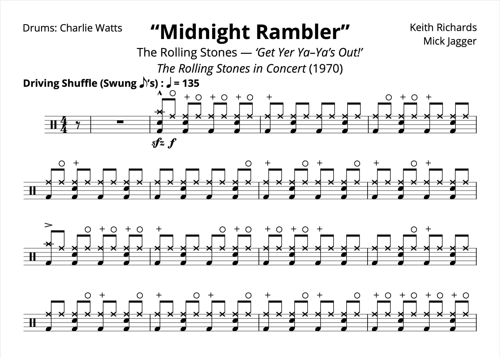
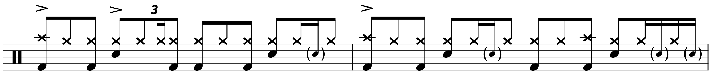

Charlie Watts (1941–2021) + Transcription: “Midnight Rambler” — Charlie Watts with the Rolling Stones
Posted on August 29, 2021

Well, it seems by now that everyone in the music world has paid their respects to Charlie Watts after his recent passing at the age of 80. The cause of death is not known at the moment; Charlie had a recent heart procedure at the start of August, but he was otherwise reported to be in good health.
There’s not much more to say about Charlie that hasn’t already been said; after-all, we’re talking about a guy who had a career lasting for nearly 60 years and spent most of it with one of the biggest bands in history.
Charlie often shared how much of his influence came from American jazzers (like most English rock drummers of his era), but in practice, I also hear him channeling a lot from the R&B discipline of playing: focusing more on groove and time than anything else. As Stewart Copeland wrote in The Guardian: “Charlie described himself as a jazz drummer, but they all do that… the jazz factor in Charlie wasn’t in the use of the ride cymbal going ting-ting-ti-ting, it was his overall body relaxation. It’s also why he hardly broke a sweat while driving the band to light up a stadium”.
Charlie was a very tasteful drummer, but he was still a risk–taker. Admittedly, not as adventurous as some of his contemporaries, but he was dependable more so than any of them. All the while, Charlie was never complacent, and never boring. As the New York Post put it, “He wasn’t a big, flashy player… He wasn’t the thunder of John Bonham, he wasn’t the sort of wild anarchy of Keith Moon, but he kept the swing in that band in everything that he did”. Or perhaps Rolling Stone: “Keith Moon and John Bonham were street brawlers, but Charlie was the silent hitman you’d never notice until he put you away… He was there to do a job, which was knocking people off their feet, night after night, year after year”.
I’d reckon this is a good time to dissect perhaps my favorite moment of the Rolling Stones discography: “Midnight Rambler” off of Get Yer Ya–Ya’s Out!. Yeah, I know it’s a live album, but the band is just coming into their prime here, and this performance is really something else (it’s also quite appropriate since Charlie is on the album cover).
There’s one moment in particular towards the end of the tune that’s really the focus of this transcription, but I take a gander at the whole number. I start off with a rundown of the shuffle moves Charlie uses to open the track: essentially a steady hi–hat shuffle and a four–on–the–floor kick pattern. Charlie uses a good number of off–beat hi–hat barks, probably ad–libbing where to put them. I included the first 16 bars; I felt like that was enough, and I didn’t want to get lost in the different variations. That’s not the point of Charlie.
Things start to get interesting at the 2:16 mark, where the song transitions into a straight funk–rock feel. I included some of his playing from this section, and you can hear Charlie channel his inner Clyde Stubblefield as he really drives the band with some fun nuances.
The next moment is the one I really wanted to look at: when the song slows down and turns into a bludgeoning 12/8 shuffle. There are a lot of fun details to appreciate in the drum part — I am especially a fan of the offbeat snare ghost notes:
Something really fascinating happens at the end of this section — the band goes right back into the 4/4 shuffle that opened that tune. Because the song jumps from 12/8 to 4/4, the quarter note gets obfuscated a bit, but if you tap your foot along through the change you can feel the pulse. It doesn’t look like much on paper, but it has to be one of Rock’s greatest moments, and Charlie nails it, slowly speeding up right back to where the song started.
I included the rest of the tune, because… why not? I tried to include all of the cymbal details, but again, I didn’t want to get lost in it all.
I got to see the Stones once, back in 2006 when they came to Oakland on their A Bigger Bang Tour. I was much too young to really appreciate both the performance and seeing Charlie drum in the flesh. But I’m still glad I got to see them. And I’m glad Charlie loved performing until the very end.
“Midnight Rambler” on Songwhip.
Some more reading if you please:
- “Appreciating Charlie Watts, The Rolling Stones' Understated Drum Master” — NPR (link)
- “Charlie Watts, Rolling Stones Drummer, Dies at 80” — Variety (link)
- “The Elegant, Astounding Drumming of Charlie Watts” — The New Yorker (link)
- “Charlie Watts' personal style should be your blueprint for wearing a suit in 2021” — GQ Magazine (link)
- “Rockstars Have a Lot of Addictions. For Charlie Watts, It Was Bespoke Suits.” — InsideHook (link)
- “Charlie Watts, the Unlikely Soul of the Rolling Stones” — The New York Times (link)
- “Charlie Watts, The Backbeat To The Greatest Band In Rock n’ Roll, Is Dead At 80” — Vogue (link)
- “8 Songs That Prove Charlie Watts Was the Coolest Rolling Stone” — Pitchfork (link)
Tags: 2021 • Transcription • Obituary • Charlie Watts • The Rolling Stones